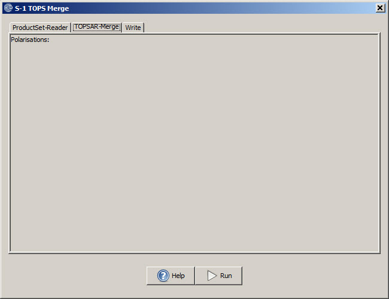

| TOPSAR Merge |
|
For the TOPSAR IW and EW SLC products, each product consists of one image per swath per polarization. IW products have 3 swaths and EW have 5 swaths. Each sub-swath image consists of a series of bursts, where each burst was processed as a separate SLC image. The individually focused complex burst images are included, in azimuth-time order, into a single sub-swath image, with black-fill demarcation in between, similar to the ENVISAT ASAR Wide ScanSAR SLC products.
With the current toolbox, most operators in the
TOPS InSAR processing chain operate on split product. For example with
"TOPSAR Coreg Interferogram" graph, debursted interferogram for a given
sub-swath is obtained. The TOPSAR Merge operator merges the debursted
split product of different sub-swaths into on complete product. The
merge happens only in range in the same fashion as in TOPSAR Deburst
operator.

GPT operator: TOPSAR-Merge. Generated from the operator source; parameter names are those used in GPT and graph XML.
| Parameter | Type | Default | Allowed values | Unit | Description |
|---|---|---|---|---|---|
selectedPolarisations | String[] | The list of polarisations |